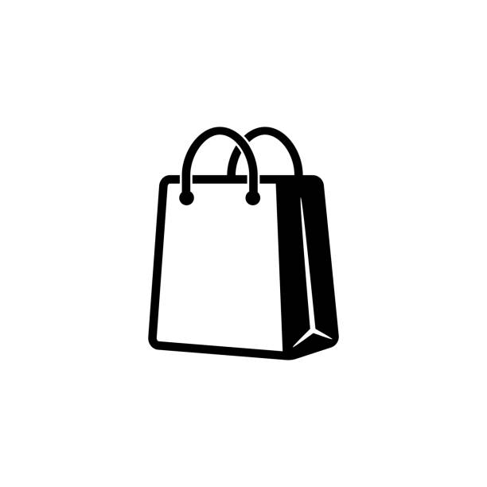
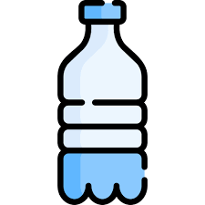
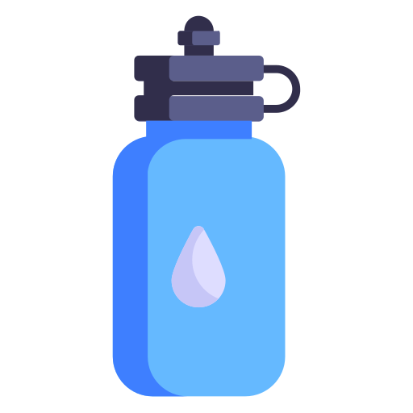
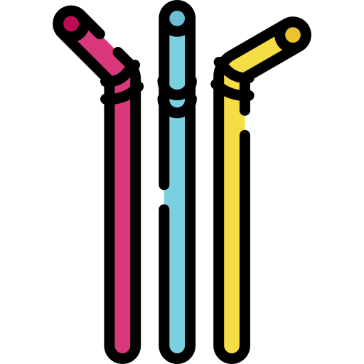

Paleta
Tipografía y espaciado
- Fuente: Arial, sans-serif (definida en guia.css).
- Tamaños: usa los valores presentes en la práctica; text-base y títulos con márgenes consistentes.
- Escala de espaciado: usa padding de 10–15px en contenedores según lo definido.
Ejemplo: catálogo de productos
Producto normal
Estados Unidos

7,05$
Clase económica
Producto premium y con descuento
México

Primera clase
Ejemplo: Noticias
Ámbito NACIONAL
Nueva línea de tren rápido Alicante–Madrid
Reduce el tiempo de viaje a menos de 2 horas
Renfe ha anunciado una nueva conexión de alta velocidad entre Alicante y Madrid con más frecuencias diarias.
La nueva línea permitirá mejorar la conexión entre ambas ciudades, facilitando los viajes de ocio y negocios. Se espera un incremento significativo en el número de turistas que eligen el tren frente al avión.
Ámbito INTERNACIONAL
Europa impulsa el turismo sostenible
Nuevos fondos para viajes con menor huella de carbono
La Unión Europea ha presentado un plan de ayudas para fomentar el turismo sostenible en los Estados miembros.
El programa financiará proyectos que reduzcan las emisiones asociadas al transporte y al alojamiento, premiando a agencias y empresas que apuesten por la sostenibilidad.
Ejemplo: Infografía
Infografía
4 Easy Ways to Reduce Your Plastic Waste
Bring your own shopping bag
Reduce plastic waste by bringing your own reusable produce bags or skipping them entirely.

Stop buying bottled water
Unless there's some kind of contamination crisis, plastic water bottles are an easy target for reducing waste.

Bring your own tumbler
Bringing your own tumbler for to-go coffee is another way to reduce your plastic footprint.

Say no to straws
Plastic straws are often a single-use item that's just not necessary.
